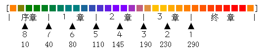

空之轨迹FC全回路入手方式 作者 T611AM

●ＨＰ ●ＥＰ ●攻击 ●防御 ●精神
●魔防 ●命中 ●回避 ●移动 ●行动力
●妨害 ●省EP ●驱动 ●范围 ●刃理
●功能 ●修改 来源说明 流程统计表
FC里面，回路的来源主要有这几种：
[合]
1.工房可以合成绝大多数普通回路和功能较弱的刃回路（需要消耗耀晶片，且同类回路级别越高，耗费耀晶片成倍增加）。
按游戏进度，依次有以下工房：
序章·洛连特市·梅尔达斯工房
第1章·柏斯市·南街区·鲁希尔工房
第2章·卢安市·北街区·格拉纳特工房
第3章·蔡斯市·中央工房1F维修窗口
终章·王都格兰赛尔·南街区·文加尔德工房
终章后期（拯救女王行动之前）·艾尔贝周游道（特务飞艇）·修理员佩顿处
终章末期·封印区域·拉赛尔博士处
越往后的工房能合成的回路种类越多。前面的工房能合成的回路，后面的工房都可以合成。各工房的价格都一样。
要想得到足够的耀晶片，请在平时有意识的积攒。例如多打几次天使羊，并且战斗中碰到SEPITH UP时，尽量抢过来使用打击数较多的招式（小艾、雪拉、提妲的S技，泰坦之咆哮，所有风系非直线魔法效果都较好）。尽量不要换钱，要换也只换地或火属性的。FC中一般最缺乏的是时属性耀晶片，如果没有有意识积攒，到了终章是很难给每人配备重要的行动力3的。
[自]
2.某些队员刚加入队伍时的初始装备。队员装备的回路大多比较一般，但有一个例外：公主自带的"治愈"回路是其他方式得不到的。
[敌]
3.某些魔兽身上带有一些回路，装上"情报"回路可以看到，不过掉落下来是有一定几率的。
[奖]
4.你的游击士等级每提升一级时，都会得到一个奖励，奖励大多数都是回路。这些奖励的回路都是其他地方没有的，而且都很重要很实用。要想快点得到，那就多拿BP早点升级吧。各升级的最早时间和需要的BP写在了上面，可以参考下。
[箱]
5.某些宝箱。也是其他方式没法得到的特殊回路，如"叶隐""美臭"等。有些宝箱里面有魔兽，打完才能拿到。
[支]
6.某些支线任务的奖励。比如"妨害3"这个回路是只有完成全部图书馆员任务才能拿到的，工房里没有。
[他]
7.其他方式。
●ＨＰ１ [合]序章·洛连特工房 及以后所有工房（消耗耀晶片：水20）；
[自]２章·阿加特初始装备
●ＨＰ２ [敌]１章·迷雾峡谷的魔兽「巨型雪猿」身上；
[敌]１章·东柏斯街道、古罗尼山道宝箱、安塞尔新街的魔兽「呼啸母兽」身上；
[合]２章·卢安工房 及以后所有工房（水200）；
[自]２章·科洛丝初始装备；
[自]３章·阿加特再次归队时装备；
[自]３章·金初始装备；
[自]终章·金再次归队时装备；
[自]终章后期·阿加特第三次归队时装备；
[自]终章后期·提妲再次归队时装备
●ＨＰ３ [合]３章·蔡斯工房 及以后所有工房（水800）；
[自]终章·科洛丝再次归队时装备
●ＥＰ１ [合]序章·洛连特工房（研修后） 及以后所有工房（时10空10幻30）；
[自]１章·奥利维尔初始装备；
[自]２章·科洛丝初始装备
●ＥＰ２ [合]２章·卢安工房 及以后所有工房（时100空100幻200）；
[自]终章·奥利维尔再次归队时装备
●ＥＰ３ [箱]３章·钟乳洞东北段宝箱，有魔兽；
[合]３章·蔡斯工房 及以后所有工房（时500空500幻800）；
[自]终章·科洛丝再次归队时装备
●攻击１ [合]序章·洛连特工房 及以后所有工房（火20）；
[自]序章·雪拉扎德初始装备；
[自]１章·奥利维尔初始装备；
[自]２章·阿加特初始装备；
[自]３章·金初始装备
●攻击２ [支]２章·「搜寻试制品」任务奖励；
[合]３章·蔡斯工房 及以后所有工房（火200）；
[自]３章·阿加特再次归队时装备；
[自]终章·金再次归队时装备；
[自]终章后期·提妲再次归队时装备
●攻击３ [箱]３章·红莲之塔5层西南宝箱，有魔兽；
[合]终章·格兰赛尔工房 及以后所有工房（火800）；
[自]终章·雪拉扎德再次归队时装备；
[自]终章后期·阿加特第三次归队时装备
●防御１ [合]序章·洛连特工房 及以后所有工房（地20）；
[自]２章·阿加特初始装备；
[自]３章·金初始装备
●防御２ [自]２章·科洛丝初始装备；
[自]３章·提妲初始装备；
[合]３章·蔡斯工房 及以后所有工房（地200）；
[自]３章·阿加特再次归队时装备；
[自]终章·奥利维尔再次归队时装备；
[自]终章·金再次归队时装备；
[自]终章·科洛丝再次归队时装备；
[自]终章后期·阿加特第三次归队时装备
●防御３ [箱]终章·艾尔贝周游道西南段南部宝箱，有魔兽；
[合]终章·格兰赛尔工房 及以后所有工房（地800）
●精神１ [合]１章·柏斯工房 及以后所有工房（水30）
●精神２ [自]２章·科洛丝初始装备；
[合]３章·蔡斯工房 及以后所有工房（水300）；
[自]终章·科洛丝再次归队时装备
●精神３ [箱]３章·红莲之塔2层中央宝箱，有魔兽；
[合]终章·格兰赛尔工房 及以后所有工房（水900）
●魔防１ [自]序章·雪拉扎德初始装备；
[合]１章·柏斯工房 及以后所有工房（风20）
●魔防２ [合]３章·蔡斯工房 及以后所有工房（风200）
●魔防３ [箱]终章·艾尔贝周游道西南段北部宝箱，有魔兽；
[合]终章·格兰赛尔工房 及以后所有工房（风800）；
[自]终章·雪拉扎德再次归队时装备
●命中１ [合]序章·洛连特工房（研修后） 及以后所有工房（幻20）；
[自]序章·雪拉扎德初始装备；
[自]１章·奥利维尔初始装备
●命中２ [合]２章·卢安工房 及以后所有工房（幻200）；
[自]３章·提妲初始装备；
[自]终章·奥利维尔再次归队时装备
●命中３ [合]３章·蔡斯工房 及以后所有工房（幻800）；
[箱]３章·托兰特平原道亚尔摩村前段西南宝箱，有魔兽；
[自]终章·雪拉扎德再次归队时装备；
[自]终章后期·提妲再次归队时装备
●回避１ [合]序章·洛连特工房 及以后所有工房（风20）；
[自]序章·雪拉扎德初始装备；
●回避２ [敌]１章·西柏斯街道的通缉魔兽「雷震狂鱼」身上；
[敌]２章·梅威海道的魔兽「骑士甲壳」身上；
[敌]２章·梅威海道的通缉魔兽、通缉魔兽②「卷尾蟾蜍」身上；
[合]２章·卢安工房 及以后所有工房（风200）；
[自]终章后期·阿加特第三次归队时装备
●回避３ [合]３章·蔡斯工房 及以后所有工房（风800）；
[自]终章·雪拉扎德再次归队时装备
●移动１ [合]１章·柏斯工房 及以后所有工房（空100）
●移动２ [合]２章·卢安工房 及以后所有工房（空200）；
[自]３章·提妲初始装备；
[自]终章·雪拉扎德再次归队时装备；
[自]终章后期·提妲再次归队时装备
●移动３ [合]终章后期·封印区域拉赛尔博士处合成（空1000）
●行动力１ [合]序章·洛连特工房 及以后所有工房（时20）
●行动力２ [合]２章·卢安工房 及以后所有工房（时200）；
[自]３章·金初始装备；
[自]终章·金再次归队时装备
●行动力３ [合]终章·格兰赛尔工房 及以后所有工房（时800）
●妨害１ [合]序章·洛连特工房（研修后） 及以后所有工房（风30）
●妨害２ [支]序章·「更换路灯」任务奖励；
[合]１章·柏斯工房 及以后所有工房（风300）
●妨害３ [支]３章后期·「再续·临时图书馆员的加班」任务奖励
●省ＥＰ１ [合]序章·洛连特工房（研修后） 及以后所有工房（时10空20幻10）；
[自]２章·科洛丝初始装备
●省ＥＰ２ [自]３章·提妲初始装备；
[合]３章·蔡斯工房 及以后所有工房（时100空200幻100）；
[自]终章·科洛丝再次归队时装备；
[自]终章后期·提妲再次归队时装备
●省ＥＰ３ [合]终章·格兰赛尔工房 及以后所有工房（时800空1000幻800）
●驱动１ [合]序章·洛连特工房（研修后） 及以后所有工房（时20）
●驱动２ [合]２章·卢安工房 及以后所有工房（时200）
●范围１ [箱]２章·绀碧之塔3层中央宝箱
●毒之刃 [敌]序章·神秘森林BOSS战「盗贼」身上；
[敌]１章·所有与空贼的战斗「盗贼」身上；
[合]２章·卢安工房 及以后所有工房（地50）
●冻结之刃 [合]终章·格兰赛尔工房 及以后所有工房（水50）
●石化之刃 [奖]最早１章·准游击士等级升为６级时奖励（88BP）；
[他]３章·蔡斯中央工房出事后，先不要进入工房救博士，跟工房门口右边的杂货店老板说话，可以免费得到一样物品，可选择石化之刃（13楼guochen123补充）
●睡眠之刃 [敌]３章·钟乳洞的魔兽「真红企鹅」身上；
[合]３章·蔡斯工房 及以后所有工房（风50）；
[自]终章·雪拉扎德再次归队时装备
●封魔之刃 [合]２章·卢安工房 及以后所有工房（地50）；
[敌]３章·钟乳洞的魔兽「蔚蓝企鹅」身上；
[自]终章后期·提妲再次归队时装备
●暗之刃 [合]序章·洛连特工房（研修后） 及以后所有工房（时50）
●封技之刃 [合]２章·卢安工房 及以后所有工房（火50）；
[自]终章后期·阿加特第三次归队时装备
●混沌之刃 [合]３章·蔡斯工房 及以后所有工房（火50）
●必杀之刃 [奖]最早２章中期（科洛丝首次参战后）·准游击士等级升为４级时奖励（147BP）
●死之刃１ [奖]最早２章结束·准游击士等级升为３级时奖励（198BP）
●死之刃２ [箱]１章·拉文努山道村北1段宝箱；
[箱]２章·阿伊纳街道北段宝箱；
[箱]３章·卡鲁迪亚隧道西段宝箱；
[箱]终章·艾尔贝周游道东北段宝箱
●情报 [奖]最早序章·准游击士等级升为８级时奖励（25BP）
●美臭 [箱]２章·绀碧之塔5层宝箱，有魔兽
●鹰目 [奖]最早序章结束·准游击士等级升为７级时奖励（47BP）
●阳炎 [奖]最早１章结束·准游击士等级升为５级时奖励（111BP）
●叶隐 [箱]终章（救出公主以后）·王都地下水路·北区域东北端宝箱，有魔兽
●治愈 [自]２章·科洛丝初始装备；
[自]终章·科洛丝再次归队时装备
●100%死之刃 修改，代码15 03
●100%必杀之刃 修改，代码16 03
●100%毒之刃 修改，代码17 03
●100%冻结之刃 修改，代码18 03
●100%石化之刃 修改，代码19 03
●100%睡眠之刃 修改，代码1A 03
●100%封魔之刃 修改，代码1B 03
●100%暗之刃 修改，代码1C 03
●100%封技之刃 修改，代码1D 03
●100%混沌之刃 修改，代码1E 03
●100%气绝之刃 修改，代码1F 03
●物理吸收 修改，代码8E 02
●魔法吸收 修改，代码8F 02
●物理反射 修改，代码8A 02
●魔法反射 修改，代码8B 02
按故事流程来统计：
──────────────────────┬────────────────
工房新增 │其他方式可得到
序章开始──────────────────┼────────────────
ＨＰ１ 攻击１ 防御１ 回避１│
行动力１│
研修结束──────────────────┼────────────────
ＥＰ１ 命中１ 妨害１│妨害１ 情报
省ＥＰ１ 驱动１ 暗之刃│
七耀石被盗─────────────────┼────────────────
│攻击１ 魔防１ 命中１ 回避１
│毒之刃
序章结束──────────────────┼────────────────
│鹰目
到达柏斯──────────────────┼────────────────
精神１ 魔防１ 移动１ 妨害１│ＨＰ２ 死之刃２
去哈肯大门─────────────────┼────────────────
│ＥＰ１ 攻击１ 命中１ 回避２
│石化之刃
调查废坑──────────────────┼────────────────
│毒之刃
潜入空贼要塞────────────────┼────────────────
│毒之刃
１章结束──────────────────┼────────────────
│回避２ 阳炎
到达卢安──────────────────┼────────────────
ＨＰ２ ＥＰ２ 命中２ 回避２│攻击２ 范围１ 死之刃２ 美臭
移动２ 行动力２ 驱动２ 毒之刃│
封魔之刃 封技之刃│
孤儿院火灾─────────────────┼────────────────
│ＨＰ２ ＥＰ１ 防御２ 精神２
│省ＥＰ１ 必杀之刃 治愈
学园祭───────────────────┼────────────────
学园祭结束─────────────────┼────────────────
│ＨＰ１ 攻击１ 防御１ 回避２
灯塔战───────────────────┼────────────────
２章结束──────────────────┼────────────────
│ＥＰ３ 防御２ 命中２ 移动２
│省ＥＰ２ 睡眠之刃 封魔之刃
│死之刃１ 死之刃２
到达蔡斯──────────────────┼────────────────
ＨＰ３ ＥＰ３ 攻击２ 防御２│攻击３ 精神３ 命中３
精神２ 魔防２ 命中３ 回避３│
省ＥＰ２ 睡眠之刃 混沌之刃│
中央工房被袭────────────────┼────────────────
│ＨＰ２ 攻击２ 防御２ 石化之刃
阿加特昏迷─────────────────┼────────────────
│ＨＰ２ 防御１ 行动力２ 妨害３
潜入雷斯顿要塞───────────────┼────────────────
３章结束──────────────────┼────────────────
到达王都──────────────────┼────────────────
攻击３ 防御３ 精神３ 魔防３│ＨＰ２ ＥＰ２ 攻击１ 攻击２
行动力３ 省ＥＰ３ 冻结之刃│防御２ 防御３ 魔防３ 行动力２
│死之刃２
武术大会结束────────────────┼────────────────
公主救出──────────────────┼────────────────
│ＨＰ３ ＥＰ３ 攻击３ 防御２
│防御２ 精神２ 魔防３ 命中２
│命中３ 回避３ 移动２ 省ＥＰ２
│睡眠之刃 叶隐 治愈
女王救出──────────────────┼────────────────
进入封印区域────────────────┼────────────────
移动３│ＨＰ２ 攻击２ 攻击３ 防御２
│命中３ 回避２ 移动２ 省ＥＰ２
│封魔之刃 封技之刃
终章结束──────────────────┼────────────────
──────────────────────┴────────────────